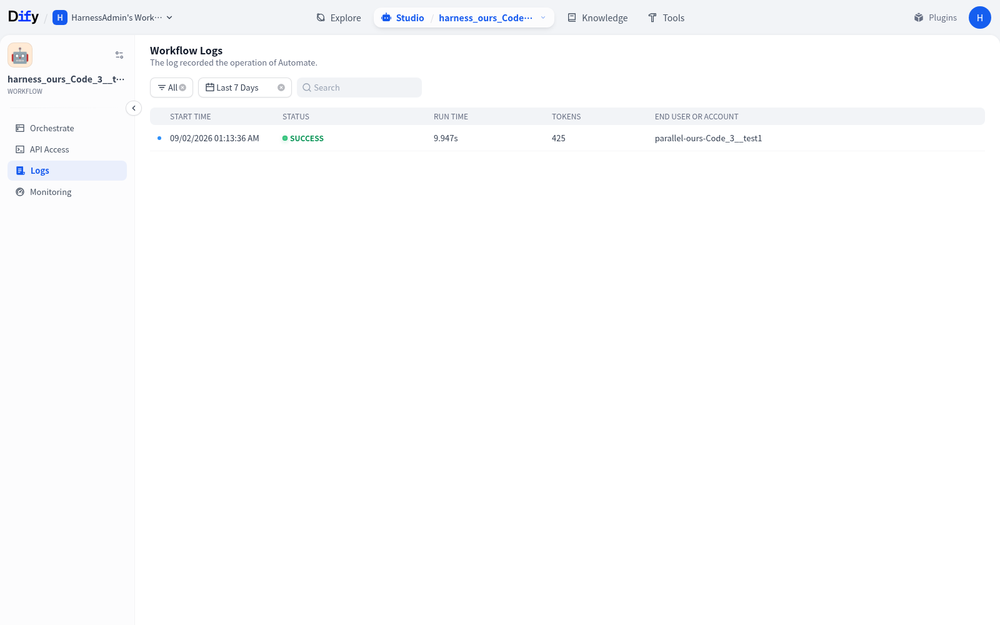
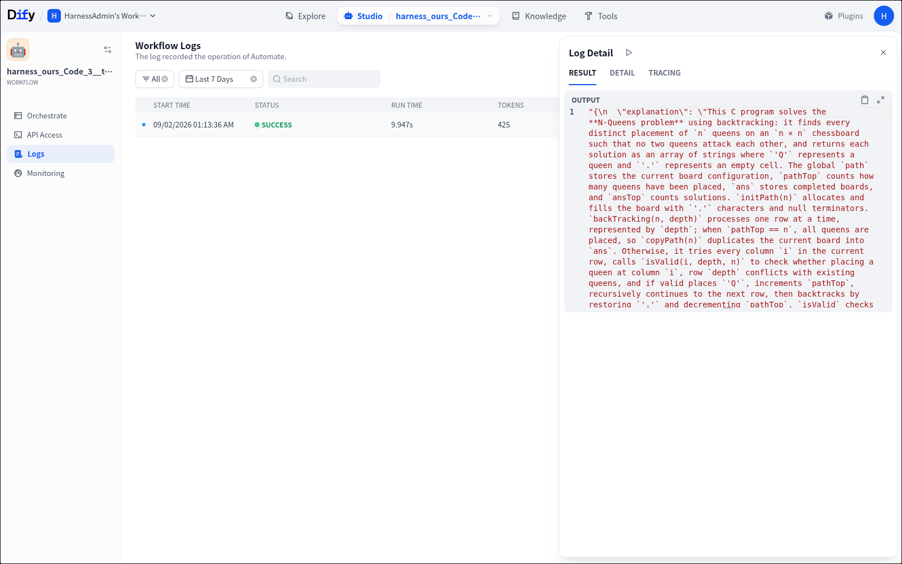
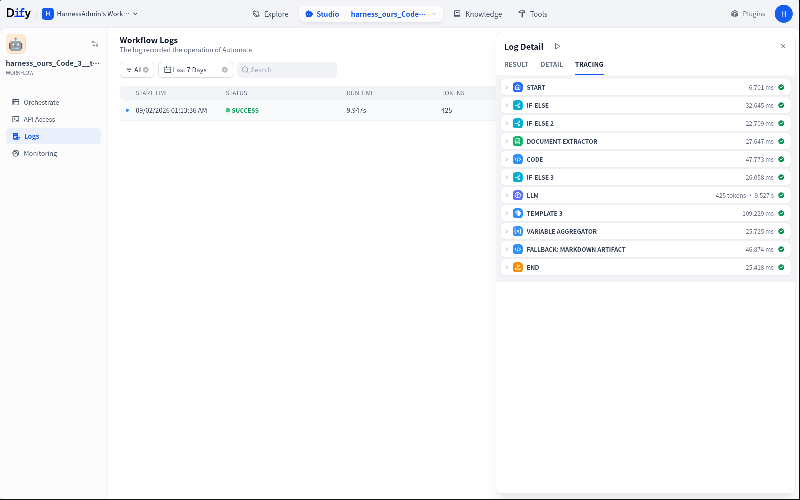

One workflow.
One successful execution.
Every runtime layer visible.
Captured directly from the retained Dify 1.9.2 application and its successful run record. These are native product screenshots, not reconstructed UI.
Workflow Canvas
The imported and published Dify application. The canvas exposes Start, routing, extraction, code analysis, LLM, aggregation, artifact fallback, and End.

Workflow Logs
The product log lists the captured execution as SUCCESS with its runtime, token count, start time, and test identity.

Result Output
The Log Detail panel exposes the real workflow result. This public benchmark input produced a source-code explanation and the required Markdown artifact output.

Node Tracing
The same run exposes every selected node and its measured latency: routing, document extraction, code gate, LLM, aggregation, artifact fallback, and End.
